Dinner at elBulli, May 25, 2005
I had the great fortune to have dinner at Restaurante elBulli recently. I've been wanting to go to there for a few years, and in the beginning of October 2004 (when the restaurant closed for the year) I started to think that I should try to go sooner rather than later: I was getting close to "fully banked up" on vacation at work, I was worried that my United frequent flier miles might vanish into bankruptcy court, and I knew someone else that was interested in creative food and wanted to come along. So thanks to a tip posted to eGullet by a stagiere at elBulli, I sent in a reservation request on October 14th, and got a reply a month later saying that I was confirmed for a party of two on May 25th, 2005. Quite a wait, but that gave me plenty of time to plan the trip.
We timed the vacation around this dinner at elBulli, but we spent time in Nice, Barcelona, San Sebastian, and Paris as well -- a month, all told. We tried to avoid renting a car, since we would be in big cities for most of the trip, and we were happy to discover that elBulli could be reached this way too. The restaurant is located outside of the city of Roses, Spain, in a place called Cala Montjoi. Roses itself is about 10 miles south of the border between France and Spain, on the Mediterranean, and Cala Montjoi is a 20-minute drive on a one-and-a-half lane road from Roses. We had taken a train from Barcelona to Figueres, and a bus from Figueres to Roses, and we got a taxi to take us from Roses over to Cala Montjoi. This let me take a few pictures of the view on the way:
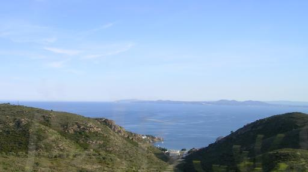
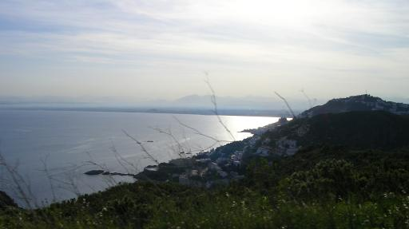
The windy road from Roses runs through the Parc Natural de Cap de Creus, over some significant hills with gorgeous views of the Mediterranean and the northern Costa Brava region.
When I was getting arrangements for the taxi ride at the hotel, I asked if I would need to provide detailed directions to the cab driver. The woman working the desk said "no - Bulli is Bulli". Its fame aside, it wouldn't even be too hard to find by knocking on every door in Cala Montjoi. Cala Montjoi, from what I can tell, is little more than a beach. There are two roads that meet there, and a handful of buildings, but I wouldn't even really call it a village.
We had arrived at the restaurant about half an hour early for our 8:00 seating, so we walked around and took in the view. We could see the beach from the parking lot of the restaurant, and there were lots of kids on the beach having a great time. We were a couple hundred feet up the cove from the swimming area, and it was pretty beautiful:
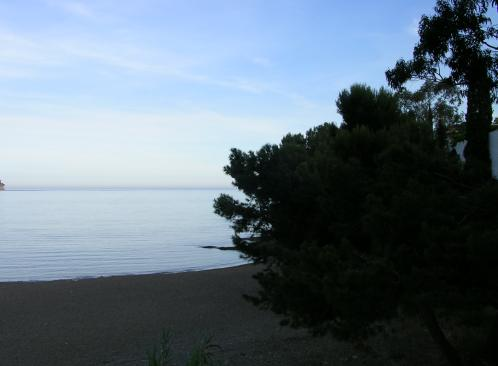
A fine place for a world-class restaurant.
Eventually we decided we'd done enough looking around, and we were impatient to start the main event. We stepped in the restaurant around 7:40, and were quickly received. As soon as our reservation was checked, the server who greeted us asked if we wanted to see the kitchen. I was surprised and very pleased, but in retrospect it's not too shocking. Those of us who come here aren't just popping in for a quick bite; we're here because of the wacky stuff going on in the kitchen, and we want to see a piece of the action.
We were told that we could take our time and look at whatever we wanted, and the staff was uniformly courteous to us interlopers, but I had no desire to get in the way just as things were starting to heat up. I did take a couple quick and blurry pictures, though:
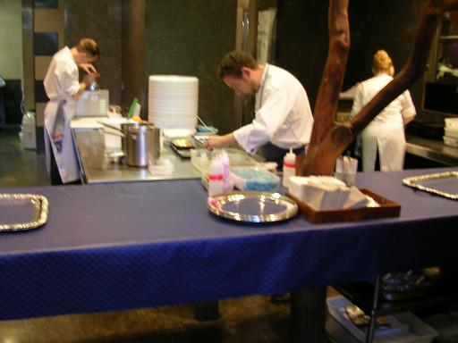
Concentrating on prepping a dish. Not sure what's up with the tree.
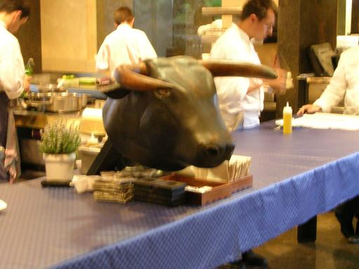
The famous carved bull's head.
Since it was still light out when we arrived, they suggested that we take our first courses on the patio. As far as I'm concerned, that's reason enough to request an early seating. The patio has a gorgeous view of the beach at Cala Montjoi, and the sun was setting as we started our meal.
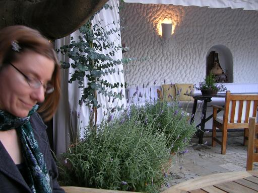
My partner, Rachel, at our table on the patio.
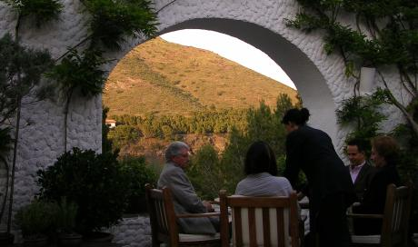
Other guests enjoying the sunset along with their initial courses.
While we were enjoying the view, we noticed that of the five or six parties seated on the patio, at least one person at every table had a camera, and they weren't just taking pictures of the scenery. I had already been planning to take pictures of the food, but seeing that others were doing the same made me less self-conscious about it. I had told dozens of people about this meal, so I figured I'd better take plenty of pictures for all the people who'd be dining vicariously with me.
When I confirmed my reservation a week before the meal, I mentioned that Rachel didn't eat beef, chicken, or ham. As we were sitting on the patio, a waiter came to our table and confirmed that there was a special menu for her. He also pointed out to me that one of the main dishes on my menu featured a "very special and rare ingredient", lamb brains, and he asked me if I was okay with that. I hadn't had brains before, but this seemed like a good place for experimentation, so I told him I'd try it. Finally, he told us that he would give us copies of our menus at the end of the evening, but that they preferred not to give them out until then, to keep the dishes a surprise. This was the one thing about the night that I wish I'd done differently -- about which more later.
Shortly after the waiter left, the food started arriving:
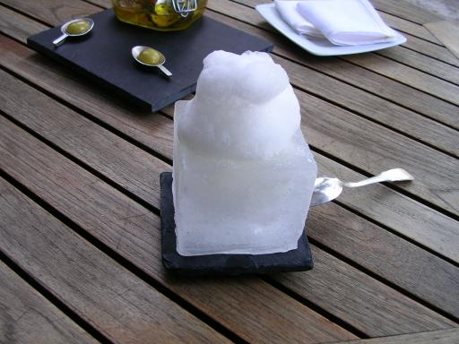
Course 1: "margarita 2005"
(The names of the courses are from the menus, which were in Spanish, and any English translations are my own best guesses.)
Margarita ice flakes with salt foam, served in a "glass" made of solid ice. To get the right effect, we're supposed to dig all the way down through the foam to get to the ice. It was a little hard to get some from each layer, since there was only about a centimeter of the margarita ice under the tower of foam, but it was a neat way to start.
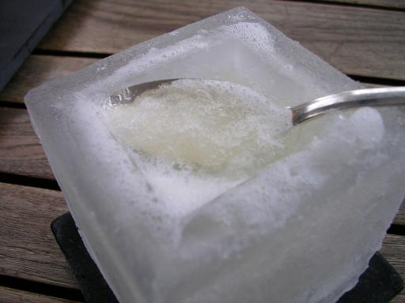
This is what the margarita ice looked like, buried under the foam.
Courses 2 through 7 were brought out all at once. Most were just a lot of fun, and we were still getting used to experiencing these little morsels, so we don't have too much to say about them - with the exception of this one:
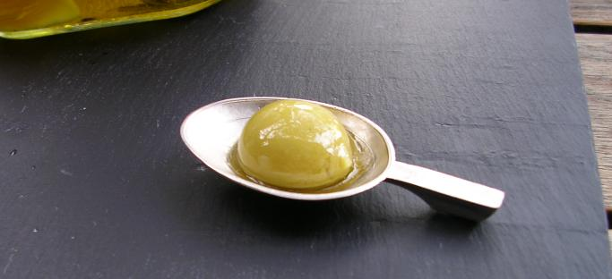
Course 2: "olivas sféricas" ("Spherical olives")
This is the course that I've been telling everyone about. I think it's a very succinct expression of a philosophy I associate with elBulli's cuisine: doing nature better than nature. (I'm paraphrasing a comment that Ferran Adrià made on an eGullet Q&A session: "I can make an asparagus soup which will taste more like an asparagus than the actual product. This is my dream, and sometimes I get it.")
The olives were presented in a glass jar that was filled with olive oil and herbs. The waiter pulled out two olives from the jar and set them on the serving spoons (visible in the background of the first picture from course 1). He mentioned that there were two more olives still in the jar, "in case we wanted another". (We did, of course, want the others. Later in the evening, we saw some other diners get this course, and were amused a few minutes later to watch them jealously guard the jar from the server, because they hadn't had a chance to have their second olives yet.)
These olives are the same shape, size, and color as regular green olives. But in fact, they are very soft hollow gelatinous balls filled with the most intensely olive-flavored olive oil I've ever tasted. When I slurped one up, the "olive" burst with the slightest pressure of my tongue, causing the velvety oil to coat the inside of my mouth. I gasped.
This dish is technically virtuosic but not show-offy -- and at the same time it's totally hedonist.
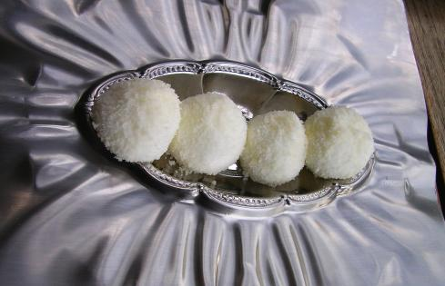
Course 3: "marshmallow de parmigiano"
What Hostess Snowballs dream of being. Light as air, melty in the mouth, with a feathery, almost powdery, coating. Chewy enough for about one chew before they started to fall apart. And, of course, not sweet at all. The flavor didn't have anywhere near the raw punch that an unadorned piece of aged Parmigiano-Reggiano does, but it had the right idea.
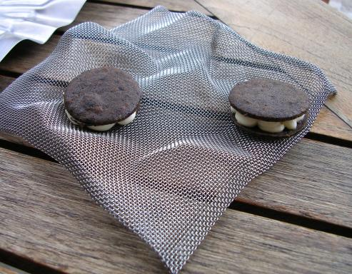
Course 4: "oreo de oliva negra con crema agria" ("Black olive Oreo with sour cream")
Pretty amusing - it looks like an Oreo, but it tastes about as different from an Oreo as could be imagined. The cookie was nicely flaky.
Course 5: "lazos de remolacha con polvo de vinagre" ("Beetroot bows with vinegar powder")
A hard, translucent ribbon of beet "candy" with vinegar powder and salt. Melted slowly as it was eaten. Great flavor balance between earthy, sour, and salty. Rachel swooned over this one, as she loves beets.
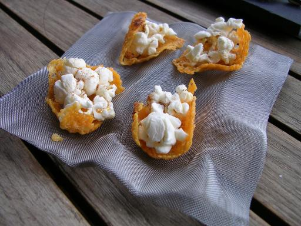
Course 6: "palomita de queso" ("Cheese popcorn")
Deconstructed cheesecorn - popcorn on a web of cheese, topped with some red powder.
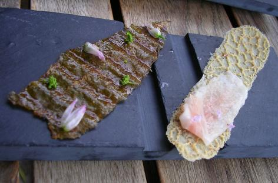
Course 7 for Rachel (left side of picture): "piel de lenguado
planchada al ajo y perejil"
("Grilled skin of sole with garlic and parsley")
Course 7 for me (right side of picture): "arlette iberico"
Crostini without bread, perhaps. Rachel's was made of crispy fish skin, and she thought it was topped with chive, broccoli, and some sort of flower. Mine was of something like pork crackling, and was topped with a tissue of jamon ibérico and some tiny flowers. They were so ethereal (each one was about the size of a finger or two) that it was hard to say a lot about the taste - not much more than "fishy" or "hammy". This one was more about the looks for me.
This is one of four courses where Rachel and I were served completely different things, since of course my dish had ham. However, when I looked over my menu more closely the day after the meal, it seemed that I had been given Rachel's menu, and she had been given ... a very similar menu, though not one that exactly described my meal. So in this case, and for three other courses, I'm borrowing the course name from other meal reports posted to eGullet, and hoping I'm getting the right thing. The descriptions are all Rachel's and my own, though.
Course 8 (unpictured): "caramelo de aceite de calabaza" ("Caramel of pumpkin-seed oil")
This is the only one I didn't have a picture of, because they brought them out and encouraged us to take them and eat them immediately. It's a shame, too, because they were beautiful. Each one looked like a sugar sculpture of a cherry: a bulb on the bottom, with a three- or four-inch-long very thin pointy stem sticking straight up, made of dark crystallized sugar and garnished with a little bit of gold leaf. The bulb was crunchy, and inside was a little flood of warm pumpkin-seed oil, coating the mouth just like the spherical olives did. This was just as breathtaking as the olives, plus it had texture contrast.
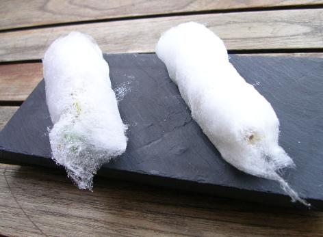
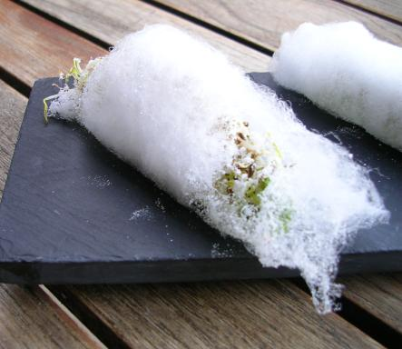
Course 9: "ninfa de algodón" ("Cotton nymph")
Cotton candy filled with Thai veggies, herbs, spices (fennel at least), sprouts, nuts, and a dark brown tamarind sauce. Basically a really fresh and slightly sweet spring roll!
The second picture shows a little more of the insides of the roll.

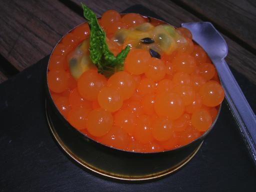
Course 10: "caviar sférico de melón" ("Spherical melon caviar")
This dish has gotten a fair bit of publicity over the past few years, and I had a version of it at a restaurant called Antidote in the SF Bay Area, so I was glad to have a chance to try the original. The "caviar" are little gelatinous balls which pop in the mouth like real caviar, but they taste like fresh melon. They're garnished with a tiny mint leaf and passion fruit seeds, which add flavor and texture contrast. Rachel was beside herself with glee, as they're a lot of fun to eat, and she likes anything with passion fruit (as do I).
For perspective, the tin is probably two or three inches in diameter.
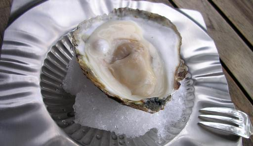
Course 11: "ostra con su perla" ("Oyster with its pearl")
A gigantic oyster, served with a creamy sauce of oyster and a soft silvery bubble (another "sférico") filled with oyster/oceanic liquid. I'm sure it would have been interesting to have all three at once, to get several striking textures of the same flavor at the same time, but this was by far the biggest oyster I've ever seen, and it was a mouthful by itself.
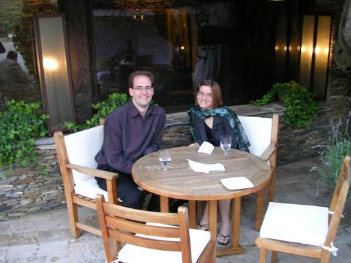
Rachel and I, on the patio. We've just finished the oysters, and it's time to step inside to the dining room.
Rachel described the dining area as being like the dining room of a good friend who happened to have a whole lot of money and a house on the Mediterranean. Now I, for one, don't have any super-rich friends with houses on big bodies of water, but I like her description. It does feel more like a large, comfortable house than a temple of futuristic cuisine.
Since we were one of the first parties to arrive, we were also one of the first to move inside. Here's what the dining room looked like before it filled up with people:
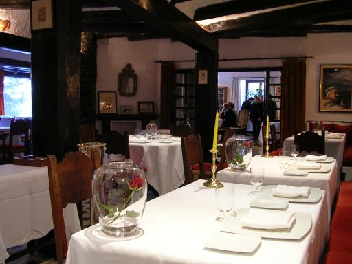
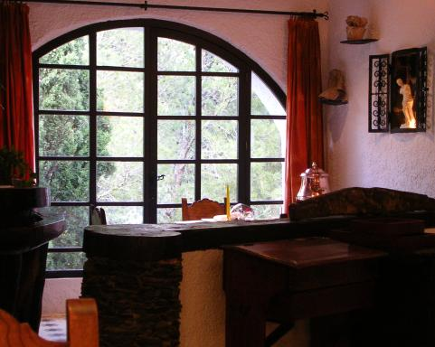
The roses were interesting. The waitstaff took the rose away (for parties of two) if the two diners sat on the opposite sides of the table, and left it there for some people sitting on the same side. I didn't think of elBulli as being a particularly romantic destination, and maybe they were just there as a tribute to the nearby town of Roses, but then why did they remove some of them?
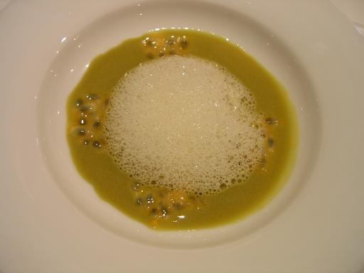
Course 12: "pasión por la aceituna" ("Passion for the olive")
A green olive puree/soup with passion fruit seeds and olive foam. The green olive flavor was strikingly strong and pure, but the passion fruit stood up to it. Again, the seeds added interesting texture. The pairing was salty, tangy, crunchy, unexpected, and I think it went well. The only downside was that the passion fruit flavor came out someone one-sided -- just tangy -- and I'm always in favor of more passion fruit.

Course 13: "pan de queso" ("Cheese bread")
This dish was brought out in two parts: a clearly very cold styrofoam "casket" wrapped with a decorative piece of paper, and a plastic ziploc bag full of nuts, apple chips, and dehydrated raspberries. The waiter carefully removed the paper and set it on the table as a souvenir (next to my water glass in this picture; the sticker on it is labeled "elBulliaire"), opened the casket, and set it on the plate. We were instructed to sprinkle some of the "muesli" from the bag on top of the "bread", replenishing it as necessary, but the two were to be eaten together.
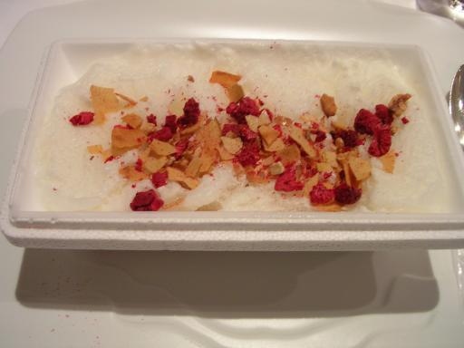
As you might guess, this isn't any ordinary cheese bread. The casket contained frozen cheese air - a substance dense enough to support the muesli which requires some scooping to get out of the casket, but which vanished within seconds inside the mouth, turning into pure flavor and just enough moisture to rehydrate the muesli a little bit. The cheese tasted like asiago - cheese you might have on cheesecorn, or on a loaf of cheese bread (natch). It was disorientingly savory, I guess because my closest comparison is ice cream.
Another work of technical genius, though not quite as lascivious as the "olives".
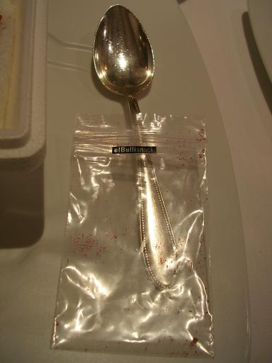
The bag that the muesli came in.
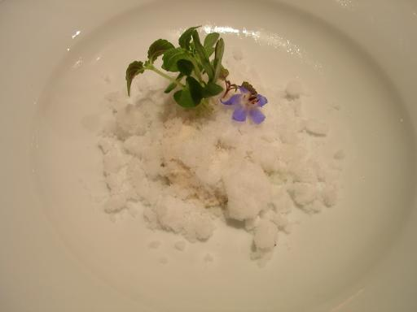
Course 14: "deshielo 2005" ("Thawing 2005")
Our waiter gave this one the slightly more poetic English name of "Water down the mountain".
Pine nut ice with pine nut cheese, topped with sunflower and basil sprouts and a blue borage flower. The "ice" is the white fluffy stuff, which had a very, very clean, almost puckery flavor of pine. Rachel said "I'd swear I was tasting pine needles!" The "cheese", which was also very cold, is the beige stuff underneath; it had the texture of cheese and the flavor of very fresh pine nuts. They deconstructed both a pine nut and ice cream in the same dish! Pretty remarkable.
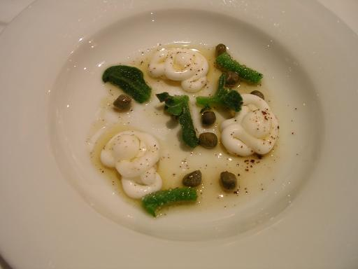
Course 15: "nudos sferificados de yogur con ficoide glaciale,
alcaparras y beurre noir"
("Spherificated yogurt knots with ice plant, capers and black butter")
Judging from the name, I'm guessing the "knots" use the same (mysterious) process as many of the other "spherical" dishes on the menu. They felt similar to the olives, for example, but had a little stronger "skin", as if they had been briefly fried. Lots of strong flavors here - tangy warm yogurt, capers, fat sea salt crystals, and delicious butter. They went well together. I was unfamiliar with the ice plant; it looked like it had lots of tiny water drops stuck to it. I don't know if that's how it looks naturally or if this was a wacky preparation, but it added more crunch than flavor.
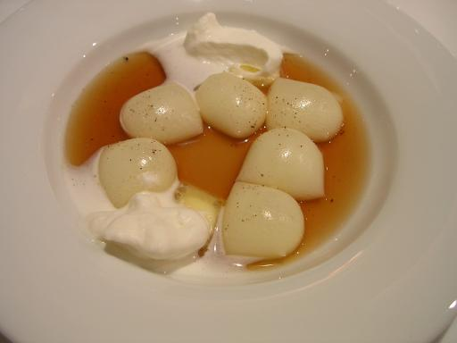
Course 16: "ñoquis sféricos de patata con
consomé de piel de patata asada"
("Spherical potato gnocchi with consommé of roasted potato skin")
This also came with whipped cream and two "butter ravioli", which you can see peeking out from each dollop of cream. We were instructed that the gnocchi and the ravioli were to be eaten in single bites, that is, we shouldn't try to bite one in half. That certainly would've been messy, as the "gnocchi" were thin gelatinous "bags" completely filled with a potato foam/puree, and the ravioli were some transparent wrapping around a little pat of butter. And the consommé! Oh, that consommé! It was clear that it wasn't just made from potatoes, or potato skins, but rather, as advertised, roasted potato skins. Roasted potato skins from heaven. The gnocchi did the wonderful burst-in-the-mouth thing, contrasting their potato flavor and texture against the consommé, and the butter and whipped cream added delicious richness.
The best baked potato in the universe.
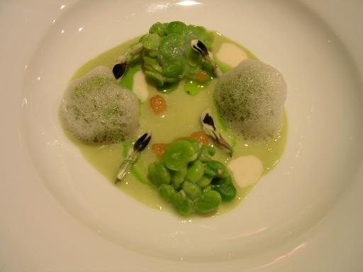
Course 17: "albóndigas de habitas
con jugo y flor de haba"
("Meatballs of little favas with juice and flower of fava")
Could also be called "fava beans five ways". Included plain favas, plus their puree, foam, juice, and flowers. The plain fava beans were somehow stuck together (maybe using bean starch?), to give them a texture somewhat like a meatball. My dish included a few bits of ham and some ham-flavored cream; Rachel's had no ham.
The beans were aggressively green in flavor, and to my taste had an unresolved bitterness. The ham helped temper the bitterness some, but not as much as I'd like. Rachel didn't mind the slight bitterness; she said that maybe she just likes favas more than I do. She also pointed out that the puree was sweeter than the other forms, maybe because it had been cooked longer. We agreed that this dish was "intellectual, but not hedonist."
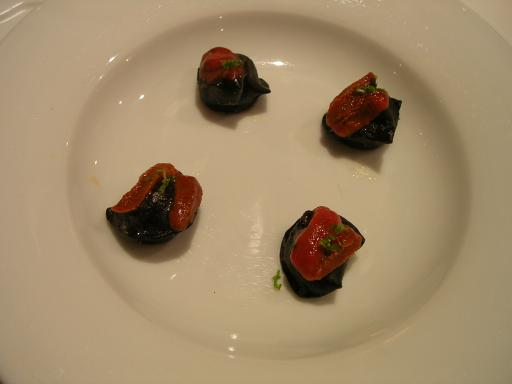
Course 18: "ravioli de malta con mantequilla, erizos y lima"
("Malt ravioli with butter, sea urchin and lime")
Ravioli made of malt (the black stuff), filled with warm liquid butter and grains of salt, and topped with sea urchin, lime zest, and lime juice. I don't know what they do to malt to make it into a liquid-tight ravioli, but it was a little nutty and quite chewy. The butter, and especially the grains of salt, inside the ravioli hit with a punch, and the lime asserted itself a little bit at the end. The sea urchin was buried under the rest of the flavors, although it might have been contributing to the salty punch.

Here's a close-up view of a single raviolo. It's about the size of a nickel.
At this point, we're both starting to feel pretty full. But the main courses are just starting to arrive!
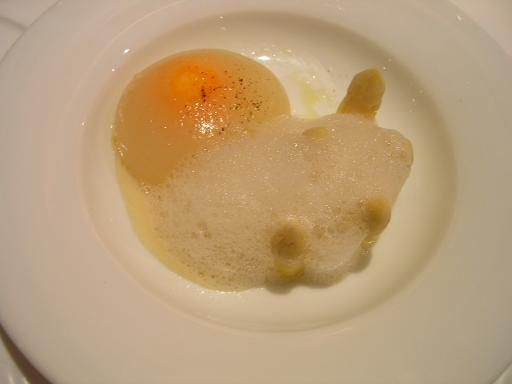
My course 19: "esparragos blancos al aceite de oliva" ("White asparagus with olive oil")
This is another place where our menus diverged, so I'm guessing at the dish's title, and I didn't even do a very good job of figuring out what was going on in the dish. I thought the waiter said that there was an egg yolk involved, but that may have just been what it looks like. My best guess was that it was a raw egg yolk infused with truffle, encased in asparagus-flavored gelatin, with a few heads of white asparagus and a truffle foam. The truffle flavor got all over everything after a while, and although it was delicious, it made it hard to taste the individual components.
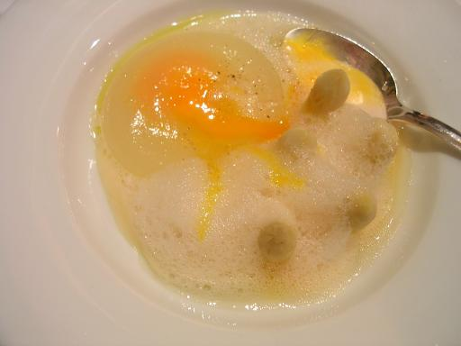
The "egg", after piercing with a spoon.
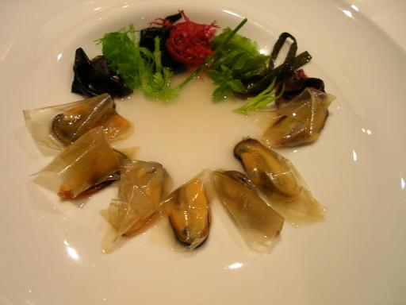
Rachel's course 19: "mejillones de roca con 'gargillou' de algas"
("Rock mussels with 'gargillou' of seaweed")
Mussels wrapped in tangy "ravioli", with seawater juice and some oceanic/"fines herbes" herbs. Rachel thought the tanginess and the oceanic flavors were just weird together.
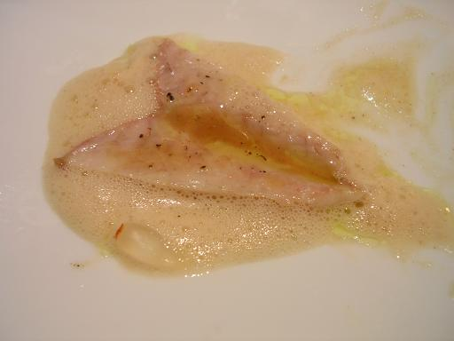
Course 20: "ventresca de caballa en aceite" ("belly of mackerel in oil")
Mackerel in escabeche. It didn't seem particularly inventive (though maybe my tired palate was missing something), but it was definitely a nice take on a local classic. The fish was the texture of a smooth paste, and it came with tiny pearl-like onions that somehow just tasted cold.

Course 21: "cigala con quinoa3" ("Norway lobster with quinoa3")
Lobster and lobster essence with three kinds of quinoa: sprouted, toasted, and "mushy". The first two are on a small square of a sweet jelly, which tasted a little like sweet peas. I think the threads of green on the cigalas were tiny strips of fresh tarragon.
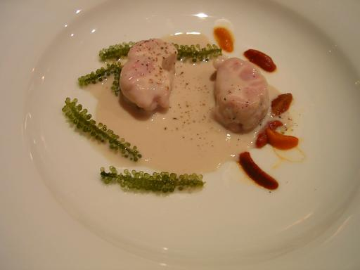
My course 22: "sesos de cordero con erizo y algas"
("Lamb brains with sea urchin and seaweed")
Okay, time for me to try something really weird. I spent the first twenty years of my life as a very picky eater, so over the course of the following decade I've been trying all sorts of new foods to make up for lost time. I had been willing to leave brains as one of those things that I might not go out of my way to try, but since it was offered here I couldn't let myself say no.
The brains did have a very soft "scrambled eggs"-like texture, as I'd heard them described, and the mouth feel was satiny smooth. But the organ meat flavor came on pretty strong after about ten seconds, and didn't let go quickly. I guess it's like foie gras but more so, both in the richness of texture and flavor. I can see why some people really like it, and I'm glad I tried it, but I think the four forkfuls I was served was all the brains I need to try.
The sauce they were served with was creamy, with a pure oceanic flavor like the seaweed and sea urchin. The sea flavors were fine, but I didn't see how they enhanced the brain experience.

Rachel's course 22: "'rapets' con yema al limón,
margarita, aceite de piñon y mantequilla noisette"
("Monkfish with yolk of lemon, daisy, pine oil, and noisette butter)
Monkfish with citrus butter and some big fat round capers. Rachel's only comment: "Brilliant."
The bread plates have been taken away, the crumbs have been expertly swept up. It's time for dessert.
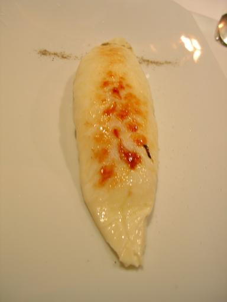
Rachel's course 23: "omelette surprise 2003"
This was to be eaten from the bottom up. It was a thin shell around a cream/meringue foam, which became somewhat passion-fruity, and got more intensely fruity as she went up. It finished with a bitter herby floral flavor from the line of lavender powder across the top. It's like a French (souffle-like) omelette crossed with a creme brulee.
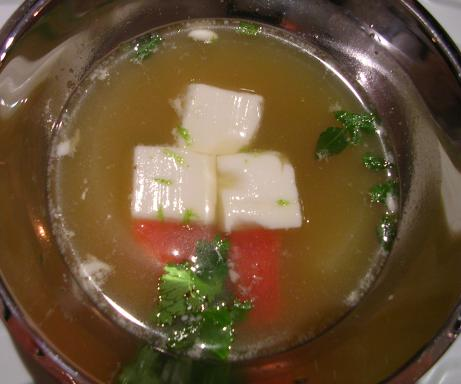
My course 23: "sopa de hierbas y especias con tofu thai"
("Soup of herbs and spices with Thai tofu")
An aromatic herbal soup with cubes of what tasted like coconut cream, grapefruit, and mint leaves. It was rather disorienting as a dessert, because the soup was salty while the cubes (and the fruit) was sweet. The Thai flavors were neat.
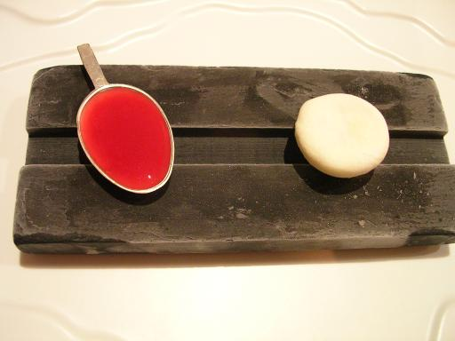
Course 24: "liquid de melocotón" ("Peach liquid")
Two bites, brought out on a very cold stone slab: a spoonful of beautifully tangy peach juice, reduced to a syrup (though not oversweetened), and a cold peach "candy". The candy was slightly peach-flavored, had the texture of very cold white chocolate, and had a startling liquid center of peach liqueur. Just what my palate needed at this point of the meal.
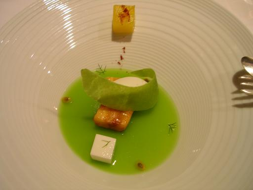
Course 25: "helado de lima con platano y crujiente de
guisantes"
("Lime gelato with banana and crunchified peas")
This looks like several desserts I've seen in the elBulli 98-02 cookbook: a dessert most easily described just by the handful of flavors used in it. This one had sweet green pea (jelly), yogurt (the white cube), fried banana, pineapple with clove (the yellow cube), and lime (the tuile and the gelato). It was light, tropical, and pleasant -- about all we could ask for at this point.
Course 26: "Morphings"
This was the one course that was completely prepared tableside. We'd seen this cart go to a few other tables over the course of the night, and now it was our turn.
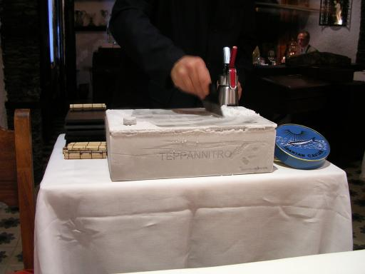
The metal box labeled "TEPPANNITRO" was very very cold. I don't know exactly how it worked, but the name suggests to me that the box was chilled from the inside with liquid nitrogen. In this first picture, the waiter was scraping part of the box's top clear of frost, though more frost started to form within seconds of the scraping.
After some space had been cleared, he made two squirts with the whipped-cream canister onto the surface:
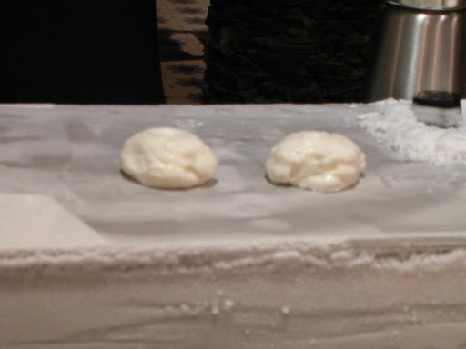
After a minute of "grilling", he picked each one up with a spatula (carefully!), flipped it over, set it back down, and pressed a bit with the spatula to flatten it. Another minute on the second side, and they were done. He picked each one up, expertly placed it on a flat spoon, and topped it with some "caviar" from the big blue tin. (I didn't catch what this "caviar" actually was, but it tasted fruity rather than salty.)
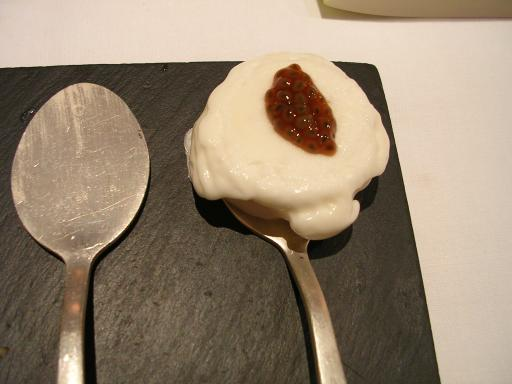
The whipped cream itself was flavored with guanabana (soursop). It was chewy, cold, and had a slightly hard surface where it had been touching the metal.
Conclusion
So what did we think of the meal?
The one negative experience was that the meal was too big. Rachel and I had only enough food during the day to stay standing, and arrived at the restaurant very hungry, yet we were full up to our eyebrows at the end of the meal. Rachel enjoyed the dishes up to the Morphings, at which point she became very uncomfortably full and wanted to leave. Since we didn't get the menus until the end of the meal, it was hard to pace ourselves. And since we left quickly, we didn't have a chance to correct the apparent mixup in the menus we did get.
Obviously, we could have solved the problem of "too much food" by eating less. If we'd had the menus, we could have eaten less of each dish, though the food was so good that that would have been hard. A more radical solution might be to not serve the three main courses -- the dishes with a significant piece of fish or meat (#20, #21, and #22). Not to disparage those dishes at all, but they didn't seem to be as experimental as most of the other courses, and they came at a point in the meal where we were already getting full. Even if the main course is the centerpiece of a "fine meal" at most restaurants, elBulli questions everything else -- why not question the concept of a main course?
Another small negative from the evening was that Rachel thought the service was somewhat overwhelming. There were a lot of small courses to be served, and potentially a different menu for every customer, so there was a huge amount of work for the waitstaff. There was certainly a lot of hustle and bustle, which I found entertaining to watch, but Rachel thought the flurry of service was distracting. She also noticed a couple disputes between waitstaff being quietly aired in the dining room, which could just as well have been dealt with back in the kitchen.
It certainly was markedly different from our meal a week later at Mugaritz, where there were only eight diners, five or six people very calmly working the front side of the house, and (as we got to see later) about thirty people busting their asses in the kitchen.
Everything else about the meal was fantastic. Almost all the dishes were between "very good" and "toe-curlingly good" for me. At the same time, they were creative, whimsical, beautifully plated, technically virtuosic, and respectful of their ingredients. I'm very happy when I have a meal that has a single dish that's as good as any one of the dishes I had here. The building and grounds are gorgeous, and are a nicely mellow contrast to the high tech of the kitchen. The service was very professional (I'd call it "badass"), smart, helpful, and thankfully, multilingual.
The event lived up to its impossibly high reputation for me, and is so far "the best meal of my life".